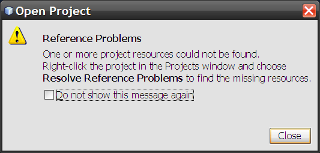
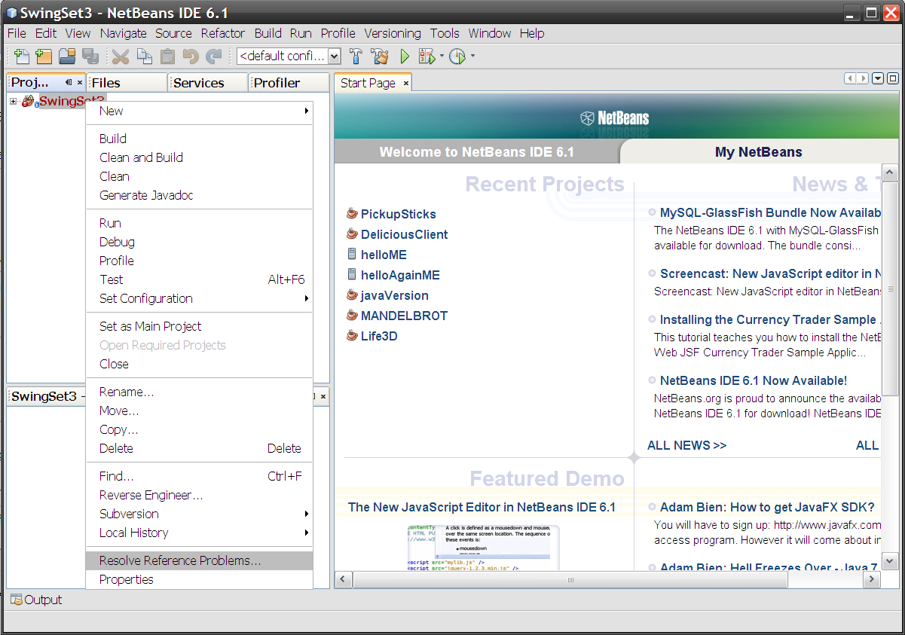
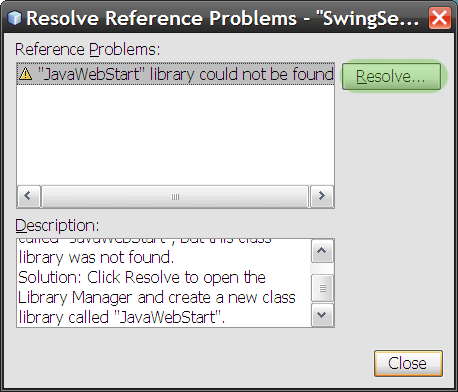
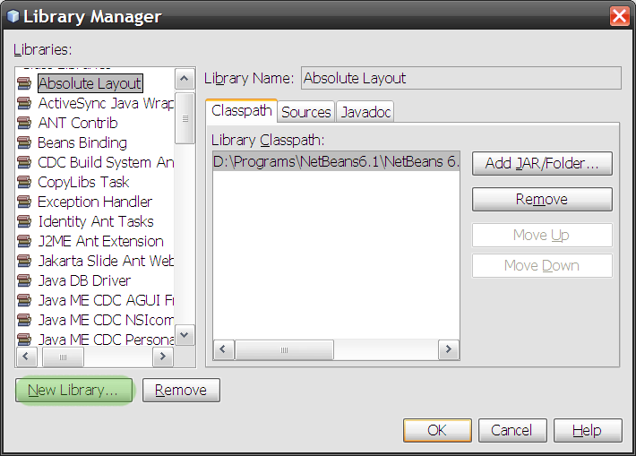
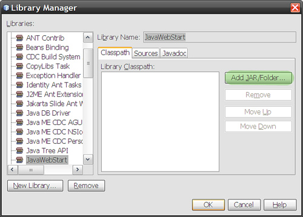
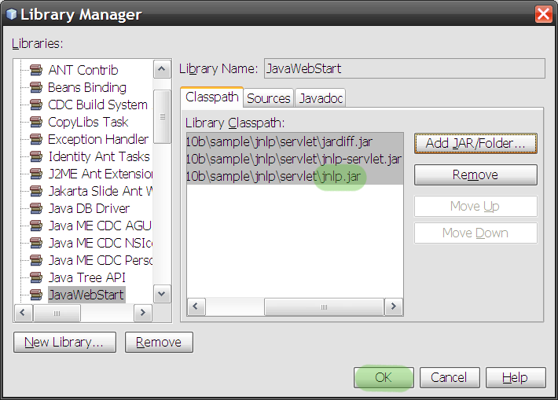
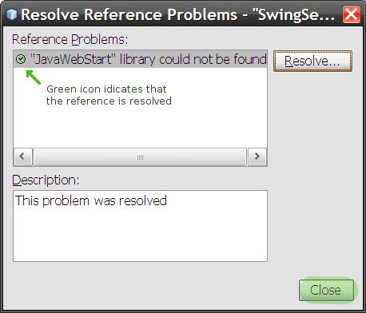
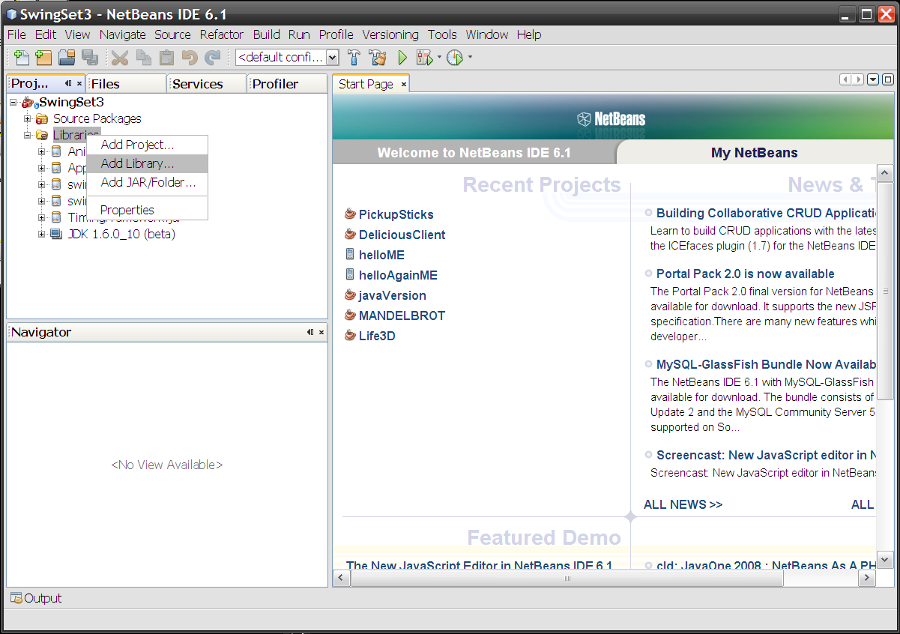
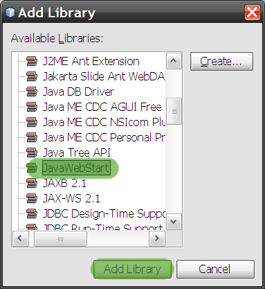
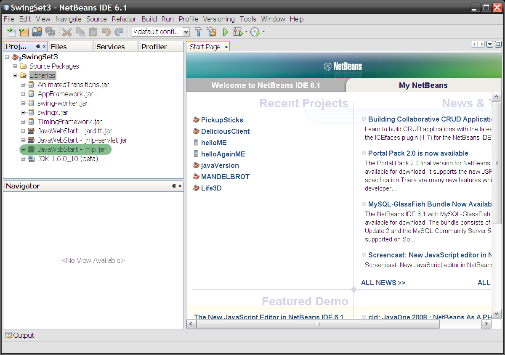

Compiling JNLP projects under stock NetBeans 6.x
This is a pretty simple issue that was easy to solve but took a bit of fumbling around...
I recently checked out the new Java SwingSet3 project from it's SVN repo, to play around with it. It's a NetBeans project so it was simple enough to fire up NetBeans 6.0 and use it's built-in Subversion support to check the project out from the repository directly...
My plan was very simple: check out the code with NetBeans, build it, run it (using JDK 1.6.0_10 beta for the new Nimbus look/feel too) and then hack at the code.
Small problem: once the project is checked out and loaded, NetBeans pops up a warning dialog:

Also the Projects view shows errors, and if you drill down to them, it's because NetBeans can't find the javax.jnlp package. Hmm, I thought JNLP was included with the JDK since 1.5? How odd...
Well, to make a long story short, the fix is to do the following steps (an explanation comes later):
- Resolve Problems by right-clicking the SwingSet3 project in the Projects view and choosing the "Resolve Problems..." menu item: 
- This opens a dialog listing the problem (should only have one). Press the "Resolve..." button at right 
- NetBeans presents a dialog listing libraries and JARs. Our issue is that the SwingSet3 project has defined a library called "JavaWebStart" but if you look in the tree at left, there is no such library defined in NetBeans by default. No worries, let's make one
- Press the button at bottom ("New Library...")

This gives you the same dialog you get via Project Properties > Libraries > Add Library > Create (in case you want to repeat later...). Give it the name that the Project wants ("JavaWebStart" in case of SwingSet3). It'll be a Class Library - Now you need to tell NetBeans about the JARs that belong to the library:

We needjnlp.jar, but might as well add the other Java Web Start stuff to the library too. You can find these JARs in your JDK under<JDK_HOME>/sample/jnlp/servlet. Add all the JARs form this directory (jnlp.jar,jnlp-servlet.jar,jardiff.jar):
 - Add your new library to your project's Compile Libraries and you're done:

{kind=link}
{kind=link}
{kind=link}
Once you've done this, you can use your new "JavaWebStart" library for other
projects requiring JWS/JNLP too:

{kind=link}
{kind=link}
{kind=link}
In the SwingSet3 project, there's also a broken reference to C:/java/jnlp1.2/jnlp.jar, but I don't think this matters (it compiles without the reference). You can probably remove it from the project.
Now, what happened? It seems to me that the project file I checked out contained a reference to a non-standard NetBeans library called "JavaWebStart". This was probably defined by the project coders to refer to the JWS class libraries. For some reason, the JWS stuff ships as part of the JDK since 1.5, but only in the Samples directory. Why Sun chose to distribute it in the samples instead and not in <JKD_HOME>/lib is a mystery to me... it causes two problems:
- Development libraries for JNLP is not accessible by default, unlike other
javax.*packages... so you'll need to go through this learning curve - If you chose not to install the samples with your JDK, you won't have
jnlp.jar, and will need to add it (using the JDK installer, if you still have it), or download the Java Web Start Developer's Kit (which also mentions it's included with the JDK since 1.5...)
Anyway, problem's solved once your IDE knows how to find the library and JAR...
SwingSet3 rocks by the way, and I'm having lots of fun learning how to do Swing properly.
2008-05-12 13:40 Update:-- This post has become a community Tips and Tricks article at the NetBeans community wiki.